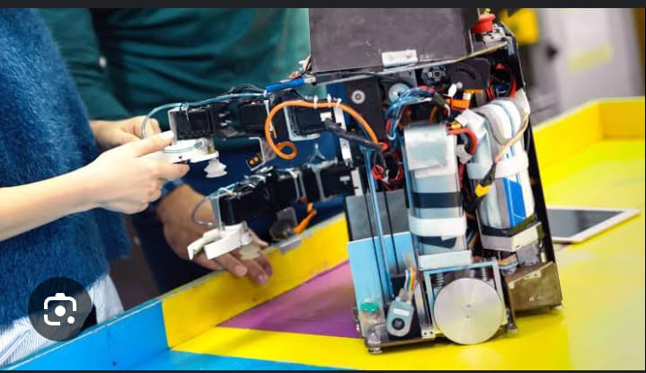

-
Técnico Superior Universitario en Manejo Agroecológico de Sistemas Pecuarios
Esta carrera está diseñada para formar profesionales capaces de aplicar prácticas sostenibles en la
producción agropecuaria, promoviendo la conservación del medio ambiente y el uso eficiente de los
recursos naturales.
-
Contaduría
Forma profesionales capaces de generar, procesar, analizar e interpretar información contable,
financiera, fiscal y administrativa, que sustente la correcta toma de decisiones en entidades
productivas, comerciales o de servicios, públicas y privadas.
-
Finanzas
Prepara profesionales para gestionar eficientemente los recursos financieros de organizaciones,
analizando mercados, evaluando riesgos y proponiendo estrategias de inversión y financiamiento.
-
Técnico en Turismo
Forma profesionales capaces de innovar, emprender y dirigir empresas del ámbito turístico,
contribuyendo al desarrollo económico y cultural del país.
-
Técnico en Mantenimiento
Está capacitado para realizar diagnósticos, reparaciones y mantenimiento preventivo y correctivo en
sistemas mecánicos, eléctricos y electrónicos, asegurando el funcionamiento óptimo de equipos e
instalaciones.
